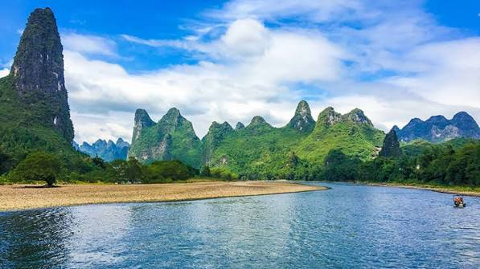

China

Li River Karst Scenery
Description
The Li River Karst Scenery in China became a UNESCO World Natural Heritage Site in 2014 because of its outstanding natural beauty. The scenic area covers about 1,159 square kilometers and is famous for its unique limestone mountains and more than 700 karst formations. Visitors can explore the area by taking a river cruise, hiking, or riding a bike while enjoying the beautiful landscapes. The Li River is home to many famous natural landmarks, including Nine-horse Fresco Hill, Glove Mountain, and Crown Cave. The local government has invested heavily to protect the environment so future visitors can continue to enjoy this amazing destination.
More Activities
Order Activity Need to do/fill something beforehand? 1 Xingping Ancient Town ❌ Usually no reservation needed. You can walk around, explore the streets, and visit shops. 2 Xianggong Mountain 🎟️ Entrance ticket is normally required. No special form for a normal visit. Wear comfortable shoes because there are stairs/hiking. 3 Yulong River Rafting ⚠️ Ticket/reservation recommended. Rafting is popular, so booking ahead can help. Follow the operator's safety and age/height rules. 4 Countryside Cycling ❌ Usually no reservation if renting a bicycle independently. 🚲 A guided cycling tour may require advance booking. 5 Cave Tours 🎟️ Admission ticket required. Some popular caves may have timed tours, so check availability before going. 6 Kayaking ⚠️ Reservation may be required, especially for guided trips. Check weather, river conditions, and safety requirements. 7 Rock Climbing ⚠️ Advance booking is recommended. A guide/instructor may be required depending on the climbing area and your experience. 8 Cooking Classes ⚠️ Reservation usually recommended or required. Classes have limited spaces and usually need ingredients prepared in advance.
Recommended Order
Xingping Ancient Town → Xianggong Mountain → Yulong River Rafting → Countryside Cycling → Cave Tours → Kayaking → Rock Climbing → Cooking Classes
Best Transportation
The best way to get around Hawaii is renting a car for total freedom, though you can use public buses or ride-shares if you stay in city areas. Transportation choices depend heavily on which island you visit and your travel style.
Best Time to Go
The best time to visit the Li River karst scenery is during the shoulder seasons of April to May and September to October. During these months, the weather is warm and pleasant, the river water levels are ideal, and you will experience comfortable conditions for cruising or cycling compared to the summer heat or winter chill.
Worst Time to Go
July to September due to intense heat, heavy humidity, high flood risks, and busy summer crowds, or during major Chinese public holidays like Golden Week (October 1–7) and Labor Day (May 1–5) when extreme overcrowding occurs.
Rules
When visiting the Li River Karst Scenery area in Guilin and Yangshuo, visitors must follow strict environmental and safety rules. Key guidelines include never littering in the water, avoiding climbing fragile karst rock formations, remaining seated on bamboo rafts, and respecting local village residents.